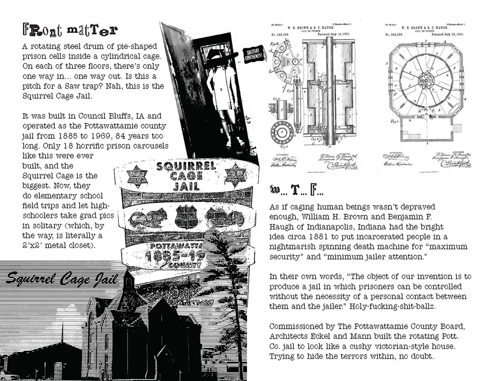
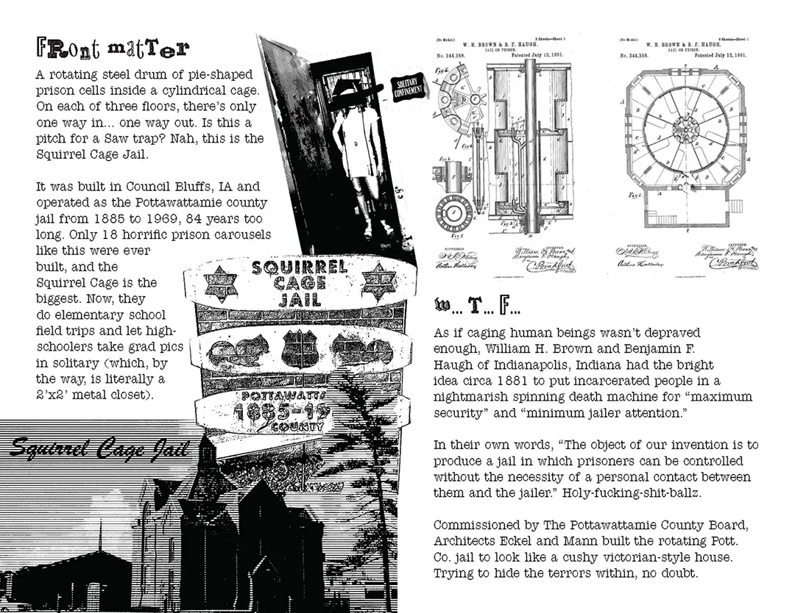

The Squirrel Cage Jail
 

Front Matter
A rotating steel drum of pie-shaped prison cells inside a cylindrical cage. On each of three floors, there’s only one way in… one way out. Is this a pitch for a Saw trap? Nah, this is the Squirrel Cage Jail.
It was built in Council Bluffs, IA and operated as the Pottawattamie county jail from 1885 to 1969, 84 years too long. Only 18 horrific prison carousels like this were ever built, and the Squirrel Cage is the biggest. Now, they do elementary school field trips and let high-schoolers take grad pics in solitary (which, by the way, is literally a 2’x2’ metal closet).
W.T.F.
As if caging human beings wasn’t depraved enough, William H. Brown and Benjamin F. Haugh of Indianapolis, Indiana had the bright idea circa 1881 to put incarcerated people in a nightmarish spinning death machine for “maximum security” and “minimum jailer attention.”
In their own words, “The object of our invention is to produce a jail in which prisoners can be controlled without the necessity of a personal contact between them and the jailer.” Holy-fucking-shit-ballz.
Commissioned by The Pottawattamie County Board, Architects Eckel and Mann built the rotating Pott. Co. jail to look like a cushy victorian-style house. Trying to hide the terrors within, no doubt.
Amputations & Escapees
The jail was supposed to be “escape-proof,” but delinquent ingenuity never fails to impress. People escaped through the ceiling, walls, toilet system, and once through the front door. One escapee left a note hoping their jailbreak would convince the county to build a new jail.
It’s no wonder there were repeated escape attempts, given the unparalleled brutality of the cage. Limbs often got caught up in the bars while the cell-block was turning; some people stuck arms out on purpose for a chance at the relative luxury of the infirmary. One legendary jailbird jammed the mechanism with his prosthetic wooden leg to piss off the jailer.
Can this shit get any worse?
You bet your ass it can! During the jail’s 8 decade run it was condemned 22 times. And kept running. It was first built with no power, no water, and no heat, save for buckets of coal. Depending on where your cell fell in the rotation, you might not have had a window.
The 90,000+ pound cell-block was rotated by hand crank. Even worse, they built the thing on a water table so it constantly went out of alignment. The final nail in the coffin came when someone died in their cell and their body couldn’t be retrieved for 2 days because the mechanism was busted. That happened in 1960, and even though the jail quit turning, it didn’t close for good for another 9 years.
Child-friendly!
Pre-CPS, the Sheriff detained children at the jail if their parents died or committed a crime, until someone else took custody. The youngest kid on record at the Squirrel Cage was only 3 years old.
The tradition of exposing youngsters to the brutality of the carceral system persists to the modern day. In third grade, I took a field trip to the Squirrel Cage Jail as part of a unit on Council Bluffs Historical Landmarks. I distinctly remember they had a prop arm sticking through the bars.
I tried desperately to find the drawing of the jail I made following this third grade field trip, but alas, it’s lost to time. Here’s the accompanying homework instead.
A slice of protest history
haha get it? 'cause the cells are shaped like pie?
In the summer of 1932, a thousand-person march of striking farmers made their way to Council Bluffs to attempt a jail-break of the “escape-proof” Squirrel Cage. Though they didn’t actually pull it off, or even make it to town before being intercepted by the Mayor, the story is worth knowing and the details are as fucked as you might expect.
To set the stage: The economy is in the toilet and farmers are withholding grain, milk, and produce from market to call attention to their financial woes. Scabs do what scabs do, and so the effectiveness of the strike was questionable at best. The most anyone seemed to get out of it was media attention.
So, the striking farmers in CB and elsewhere turned to direct action. Blockading roads with torn-down telephone polls, hay bales, make-shift road spikes, and picket lines, the protestors stood on guard with baseball bats to keep scabs from bringing their goods to town.
In Council Bluffs, the blockade on Highway 34 refused a deputy’s orders to not stand in the road (like... obviously). To break the block, Sheriff Lainson hired 98 “special” deputies and promised to “fight it out if it took 5,000 deputies.” Orders were to lock up every person found picketing on charges of “unlawful assembly.”
Lock ‘em up Lainson did, as he crammed 60-ish farmers into a jail that could hardly hold them. He said, “If the Pottawattamie county jail bulges with picketers, it’ll just have to bulge. I’m going to see that law and order are maintained.” Queue the march.
Crowds were already forming around the Squirrel Cage, but rumors spread of 1,000 men headed to CB to bust the farmers out. Big Bad Pig armed his new hires with submachine and riot guns and said that they would handle a mobbing “in the best possible manner,” instructing his deputies to shoot to kill. The only person to be “handled” was a special deputy with 3 days of service, killed on accident when a riot gun discharged during a weapons test. lol.
An “emergency peace conference” was put on by the Chamber of Commerce, where a few strikers rubbed elbows with pigs in negotiations. A few wealthy farmers bailed the rest out, and the Mayor talked down the out-of-towners. Booooo.
Extra, extra!
Infamous bank robber George "Baby Face" Nelson supposedly spent 12 days in the Squirrel Cage.
While the Pott. Co. Jail is named for the black squirrels of Council Bluffs, this jail design is also called a "human rotary" or "lazy susan." Gross!
FARM STRIKE TRUCE SPURNED
By Associated Press
Farmers holiday strike adherents near Sioux City, Cherokee and Council Bluffs, Iowa, Thursday refused to obey an armistice order by Milo Reno, president of the National Farmers Holiday Association, sponsor of the non-selling campaign for increased agricultural prices.
Near Cherokee a crowd of pickets, estimated at 400, patrolled roads, not so much to keep farm products from market as to ascertain the identity of men who early Wednesday wounded 14 farmers with shotgun and rifle fire.
Leaders of the Cherokee County group declared they would maintain their posts until the pickets' assailants were brought to justice. County Attorney Rodman and Sheriff Tilton said evidence they and the holiday adherents had gathered would be given to a grand jury Sept. 5.
Near Sioux City the pickets continued their embargo attempts. the Woodbury County holiday chairman having described as a "mistake" Reno's edict declaring a temporary truce in the campaign, pending a Middle Western governors' converence Sept. 9. when marketing plans will be discussed. The truce applied only to Iowa.
Three livestock trucks were turned back as picketing was resumed on one highway near Council Bluffs.
Sheriff McDonald at Omaha swore in 41 more deputies, bringing to 86 the force with which he hopes to clear Douglas County roads of pickets, who last night threw sticks and stones at the sheriff, his men and truck drivers. McDonald said he feared a repetition of the disorders tonight. He said nine truck drivers were hurt last night by pickets.
The Militant, 1932
I found this article from a 1932 issue of The Militant that positions the Council Bluffs strike in the broader context of the Farm Strike and the labor movement. Enjoy.
«Farmers Holiday» in lowa
A New and Militant Type of Middle Class Revolt
The strike of the farmers in Sioux City has spread to other parts of the state, of Iowa and Indiana, and into nearby states. Truck gardeners and dairy farmers have joined the movement and threaten the law and order of the authorities. Minneapolis reports show the strike has reached the Northwest. This new strike action of this section of the pety bourgeois indicates the deep changes the agriculture of the United States is undergoing.
The reduction of wholesale food prices, the bosses' hold on the farms and the reduction of the purchasing power of the workers has upset the standards of the rich farm regions which were able to survive the constant agrarian crisis up to the present. In Sioux City and Council Bluffs, Iowa a higher plane of struggle has been reached. Mass picketing, fights, and clashes wgith scabs and authorities are reported daily. In Council Bluffs the striking farmers marched upon the jail and forced the authorities to release 60 striking farmers. All reports indicate the strike is spreading.
Press reports from western papers show that in spite of minor ebbs and flows, the farmers revolt against conditions is growing. The farmers can no longer argue against the striking workers because now the striking farmers have joined them as allies in the struggle against the financiers and their henchman.
August 22, the striking farmers stopped two trains enroute to Sioux City with livestock and milk. 400 farmers of the Missouri valley agree to begin a blockade of highways leading to Omaha. On August 26, the press reports reinforced picket lines on all roads leading to Council Bluffs from the Iowa side. At Sioux City the 88 arrested strikers were released on habeas corpus proceedings, Iowa national guards are in readiness to be sent id any part of the state.
The Nebraska farmers started picketing roads in and around Omaha. In Iowa, the state power of the capitalists has been used against striking farmers, arresting strikers, routing them with tear gas and general intimidation that striking workers are well trained in.
The farmers of Iowa, Nebraska, North and South Dakota and Minnesota are following up the strike movement in one form or antoher. In other farm regions preliminary steps in this direction are being taken. The middle class state farm organizations are endeavoring to give leadership to the movements and link them up in a general struggle against the monopolists. Reports from Lewiston, Idaho inform us that 400 farmers in this rich wheat district are bound by agreement to sell none of their wheat for 60 days unless a profit can be made. They control 5 million bushels of wheat.
Significance of Farm Strike
What significance has the farmers strike? What is the relation the farmers strike has to the workers struggles? A survey of this struggle is essential to prevent the vanguard from being shifted into opportunist channels by Stalinism today as was the case in the past when Pepper, as a representative of the Right-Center bloc, lost the Communist movement into opportunism with his two-class party idea.
The crisis is throwing upon the surface new layers of rebels. These new layers crystalize around issues of immediate demands at hand. The Bonus March was a typical example of this. The Bonus Army with the exception of the minority Left wing, was a force made up of patriotic Americans, "Loyal Americans", who wanted relief from mass hunger and starvation. The Government answer to their cry for bread with bullets shifted the "army" and many of its sympathizers to the Left, and away from their patriotism.
The farmers' strike follows this new trail, but throws to the surface and entirely different layer of "enemies" of capitalism. The reorganization of agriculture — to coordinate it with industry — by the American imperialists pushed the farmers forward into struggle. Their outlook on property relations warps this movement, restricts it to a struggle attempting to hold in check the concentration and centralization of wealth. They want to turn the wheels of industry backward.
Workers' Strike and Farmers' Strike
When the workers strike it is a blow against capitalism, at the basic contradictions of the system, a blow at the relation of the exploiting machine owner and the exploited producing wage slaves. But the farmers' strike turns on a different axis. The farmers strike does not unearth the same relationship to the basic contradictions of capitalism. The farmers' strike receals the relationship of a section of the petty-bourgeoisie, the farmers, fighting another section of the capitalists who have monopolized the avenues between production and distribution. The workers solution is forward to the social revolution. The "solution" of the farmers is an attempt to check the march of industry, to turn the wheels backward. This does not mean that we reject the farmers' struggles as reactionary. It means that it is doomed at the start to certain limitations and must be supported in this light, as an auxiliary struggle in the class struggle against the capitalists. Not a struggle on an equal basis with the workers' struggle, as indicated by the slogan of "Workers and Farmers Government", but as a struggle of allies in the fight of the workers to overthrow capitalism.
The Middle Class in the Crisis
Large sections of the middle class have already been ruined by the crisis and the attempted reorganization of American industry by the financiers. The farmer, as a section of this class, has been in a permanent crisis. The financiers have already won a section of the "new" middle class as flunkies. Not so with the farmes, who will fight to the end. It is not correct to contend that the imperialists have won the middle class as a whole to their side, nor is it correct to say the middle class will not survive the crisis. The problem is many-sided and not so simple. The whole middle class is divided and moving in many directions and no solution of their problems can be expected under capitalism and particularly from the leaders of the middle class. As allies of the proletariat, they are of value to the further development of society.
This new farmers struggle is on an entirely different plane when compared to the struggles of the former centuries.
The struggle against capitalism in America is the struggle of the workers, industrial and agrarian, black and white, etc. The farmers must be used as allies. The Communist workers must guard against the Stalinist attempt to elevate the farmers' strike above its proper level in the class struggle. The Stalinists attempt to elevate the farmers' strike to the same level of the workers' struggle against capitalism must be rejected, if we are to approach the problems of the farmers with a correct Marxian policy.
— H.O.
hi! it's me, kate. i made this zine. information and images from:
- The Historical Society of Pottawattamie County
- The Council Bluffs Public Library
- The Daily Nonpareil
- The Chicago Tribune
- The Militant
- my 3rd grade homework
- the love of my life (nix)
- and my memory :P